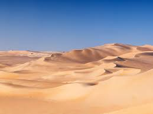
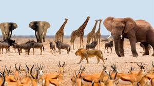
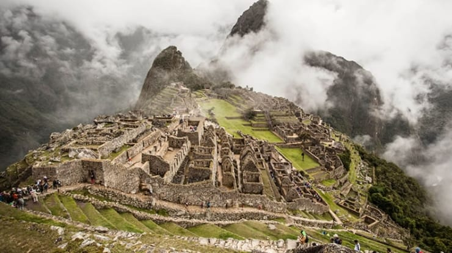
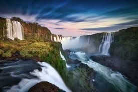
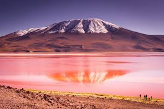
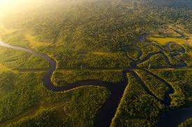
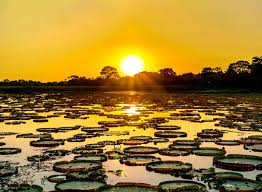

A América do Sul e a África são continentes ricos em cultura, natureza e história. Apesar das diferenças, compartilham uma grande diversidade e belezas únicas.


A África é dividida em cinco grandes regiões geográficas: ÁFRICA SENTENTRIONAL (Norte) Localizada acima do Deserto do Saara, inclui Egito, Líbia, Tunísia, Argélia, Marrocos, Saara Ocidental e Sudão. Caracteriza-se pela influência árabe e religião islâmica; OCIDENTAL Situada a oeste, entre o Saara e o Golfo da Guiné. Exemplos: Nigéria, Senegal, Gana, Costa do Marfim, Mali e Guiné; CENTRAL Região central do continente, marcada pela Bacia do Congo. Inclui Camarões, República Centro-Africana, Chade, República Democrática do Congo, Angola e Gabão; ORIENTAL Localizada na porção leste, banhada pelo Oceano Índico. Inclui Etiópia, Quênia, Tanzânia, Somália, Uganda e Madagascar; e MERIDIONAL (Austral) Compreende os países ao sul do continente. Exemplos: África do Sul, Botsuana, Moçambique, Zimbábue, Namíbia e Zâmbia..
O clima da África é predominantemente quente, com a maior parte do continente situada entre os trópicos, destacando-se o clima equatorial (quente/úmido), tropical (estações seca/chuvosa), desértico (quente/seco) e mediterrâneo (verões quentes e secos, invernos amenos e úmidos). A diversidade climática é influenciada por fatores como a latitude, altitude e proximidade com oceanos, resultando em uma variedade de ecossistemas e paisagens.
| Saara | O deserto do Saara, localizado no Norte da África, é o maior deserto quente do mundo, com 8,6 milhões de km² e clima extremo (temperaturas acima de e secas). Cobre cerca de 10% do continente e, no passado, já foi uma área verde. É conhecido pelas dunas, passeios de quadriciclo e camelo, além de baixa densidade populacional. | Savanna | A savanna é uma região de gramado com árvores esparsas, caracterizada por estações secas e chuvosas. Encontra-se principalmente na África Central e Oriental, abrangendo partes da Tanzânia, Quênia, Madagáscar e outros países. É habitat para uma grande variedade de animais selvagens. |


A cultura africana é fundamentada na coletividade e na preservação da memória. Suas celebrações, como o Kwanzaa e o Timkat, conectam ritos religiosos, ciclos agrícolas e valores de união. A filosofia Ubuntu ("Eu sou porque nós somos") sintetiza essa visão de interdependência humana. Na música e na arte, o continente exerce influência global, sendo o berço de ritmos como o samba e o jazz. Destacam-se a complexidade da polirritmia, o uso de instrumentos icônicos (como a Kora e o Djembe) e a importância das máscaras em rituais sociais e espirituais. A transmissão desse conhecimento ocorre principalmente pela tradição oral, onde anciãos e "griots" preservam a história e o respeito à ancestralidade, mantendo viva a identidade cultural através das gerações.
Savana: O mais extenso (20% do continente). Marcado por gramíneas e acácias. Animais: Leão, elefante, girafa, zebra e guepardo. Floresta Tropical: Clima quente e úmido na Bacia do Congo, com vegetação densa. Animais: Gorila, chimpanzé, ocápi e leopardo. Deserto (Saara e Kalahari): Extrema aridez e variação térmica. Animais: Camelo, dromedário, escorpião e feneco. Estepes (Sahel): Faixa de transição semiárida com vegetação rasteira. Animais: Avestruz, gazela e animais de pastoreio. Vegetação Mediterrânea: Presente nos extremos norte e sul, com verões secos. Animais: Macaco-de-gibraltar e pinguim-africano.
História e Cultura: As Pirâmides de Gizé (Egito) e a vibrante cidade de Marrakech (Marrocos). Natureza e Paisagens: A Table Mountain e as Victoria Falls, além do Monte Kilimanjaro, o ponto mais alto do continente. Vida Selvagem e Lazer: Safáris no Parque Nacional Kruger, expedições no Deserto do Saara e as praias paradisíacas de Zanzibar.



.jpg)
A América do Sul é geralmente dividida em quatro sub-regiões baseadas em aspectos geográficos, geológicos e culturais: AMÉRICA ANDINA: Países atravessados pela Cordilheira dos Andes: Venezuela, Colômbia, Equador, Peru, Bolívia e Chile., AMÉRICA PLATINA: Países que compartilham a Bacia do Rio da Prata: Argentina, Paraguai e Uruguai., GUIANA: Região ao norte, composta pela Guiana, Suriname e Guiana Francesa. BRASIL: Devido ao seu tamanho, idioma e características geográficas, o Brasil é frequentemente considerado uma região à parte. .
A América do Sul apresenta grande diversidade climática devido à sua vasta extensão, com predomínio de climas tropicais e equatoriais ao norte/centro (quentes e úmidos) e subtropicais/temperados ao sul. A Cordilheira dos Andes causa climas frios de montanha e áridos, enquanto o interior possui savanas e o Nordeste brasileiro é semiárido.
| Amazônia | A Amazônia é a maior floresta tropical e bacia hidrográfica do mundo, abrangendo nove países da América do Sul, com mais de 60% em território brasileiro. Fundamental para o clima global e biodiversidade, o bioma abriga cerca de 30 milhões de pessoas e enfrenta desafios como desmatamento e queimadastd> | Pantanal | O Pantanal é a maior planície inundável do mundo, situada entre Brasil, Bolívia e Paraguai. É um santuário da UNESCO famoso pelo ciclo das águas (cheia e seca), que dita a vida de animais como a onça-pintada e o tuiuiú. O turismo foca em safáris e vivência em fazendas, tendo como principais portas de entrada as cidades de Cuiabá/Poconé (Norte) e Campo Grande/Corumbá (Sul). |


Cultura: É marcada por uma forte identidade social, valores familiares e uma mistura única de crenças religiosas (sincretismo), onde o catolicismo convive com rituais ancestrais. Festas: As celebrações costumam ser explosivas e coloridas. O Carnaval (especialmente no Brasil e Colômbia) é o maior expoente, mas festas religiosas e o Dia dos Mortos (região andina) também movem multidões. Músicas: O ritmo é o coração do continente. Destacam-se o Samba e Bossa Nova (Brasil), o Tango (Argentina/Uruguai), a Salsa e Cumbia (Colômbia/Venezuela) e o Reggaeton, que hoje domina as paradas globais. Tradições: Variam do hábito de tomar Mate/Chimarrão no Sul até a preservação de línguas e tecelagens indígenas nos países andinos, além da forte tradição gastronômica ligada ao milho, feijão e carnes.
A América do Sul é um gigante da biodiversidade, unindo a maior floresta tropical (Amazônia), a maior planície inundável (Pantanal) e a cordilheira mais longa do mundo (Andes). Sua fauna é única, com animais icônicos como a onça-pintada, a capivara, a lhama e o condor. O cenário natural vai do extremo seco do Atacama às pastagens dos Pampas e às geleiras do sul.
Machu Picchu (Peru): A "Cidade Perdida dos Incas", uma fortaleza histórica no topo das montanhas. Cristo Redentor (Brasil): Estátua icônica no Rio de Janeiro com vista panorâmica da cidade e mar. Cataratas do Iguaçu (Brasil/Argentina): Um dos maiores e mais impressionantes conjuntos de quedas d'água do mundo. Salar de Uyuni (Bolívia): O maior deserto de sal da Terra, que vira um espelho gigante quando chove. Torres del Paine (Chile): Parque na Patagônia famoso por suas montanhas de granito, geleiras e lagos azuis. Galápagos (Equador): Arquipélago isolado com espécies únicas de animais, ideal para observação da natureza.F